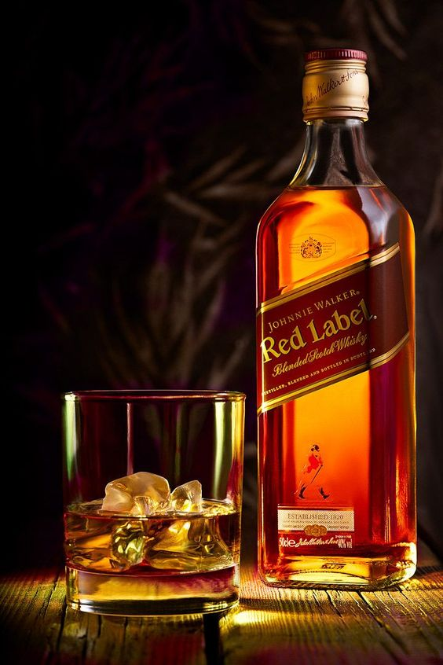
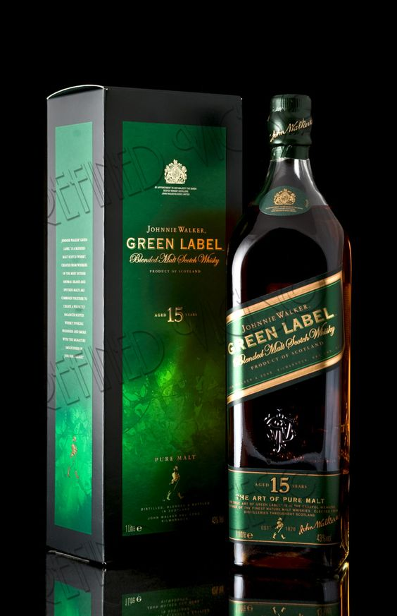
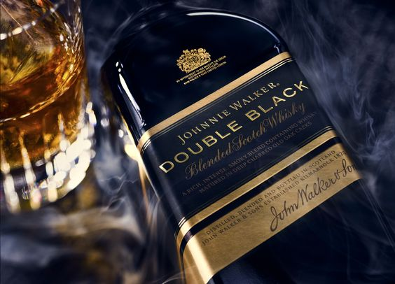

JOHNNIE WALKER BLACK LABEL 12 AÑOS
Johnnie Walker Black Label es un verdadero ícono. Una mezcla magistral de whiskies de malta y de grano de toda Escocia, añejada durante al menos 12 años. El resultado es un whisky con profundidad y equilibrio de sabor. Bébelo solo, con hielo, o en coctel en vaso largo.
$2,400.00

JOHNNIE WALKER RED LABEL
Un aroma floral que crece y culmina en llamas. Johnnie Walker Red Label es el Scotch Whisky más vendido del mundo. Está hecho para mezclarlo en exquisitos cocteles y disfrutarlo con tus personas preferidas. Combina whiskies especialmente elegidos por sus sabores intensos y vibrantes que aportan un toque de fuego a cualquier bebida.
$1,149.00

JOHNNIE WALKER GREEN LABEL 15 YEARS
Nuestro único whisky escocés mezclado con maltas puras. Johnnie Walker Green Label es un tesoro oculto con magníficos secretos que revelar. Se elabora con maltas procedentes de todos los rincones de Escocia y se añeja durante un mínimo de 15 años para encarnar equilibradamente los sabores singulares de cada paisaje. Un whisky en perfecta armonía con la naturaleza.
$4,599.00

JOHNNIE WALKER DOUBLE BLACK
Johnnie Walker Double Black es el hermano rebelde de Johnnie Walker Black Label con una intensidad profunda y compleja. Similar al icónico Black Label, pero más joven, más audaz y más rebelde.
$3,200.00

JOHNNIE WALKER GOLD LABEL RESERVE
Johnnie Walker Gold Label Reserve es un whisky que siempre conserva su autenticidad. Es un Scotch Whisky galardonado elaborado con mezclas elegidas por sus cualidades dulces y melosas. Disfruta de sabores vivos y dinámicos en cada sorbo.
$3,940.00

Producto 2
Sabores suaves y aterciopelados acarician el paladar. Johnnie Walker Blue Label proviene de la selección manual de Scotch Whiskies excepcionales con una notable complejidad de sabor. Solo una de cada 10 000 barricas resulta adecuada para formar parte de este whisky. Sugerimos tomarlo solo, junto con un vaso de agua helada para realzar su carácter intenso.
$19,300.00